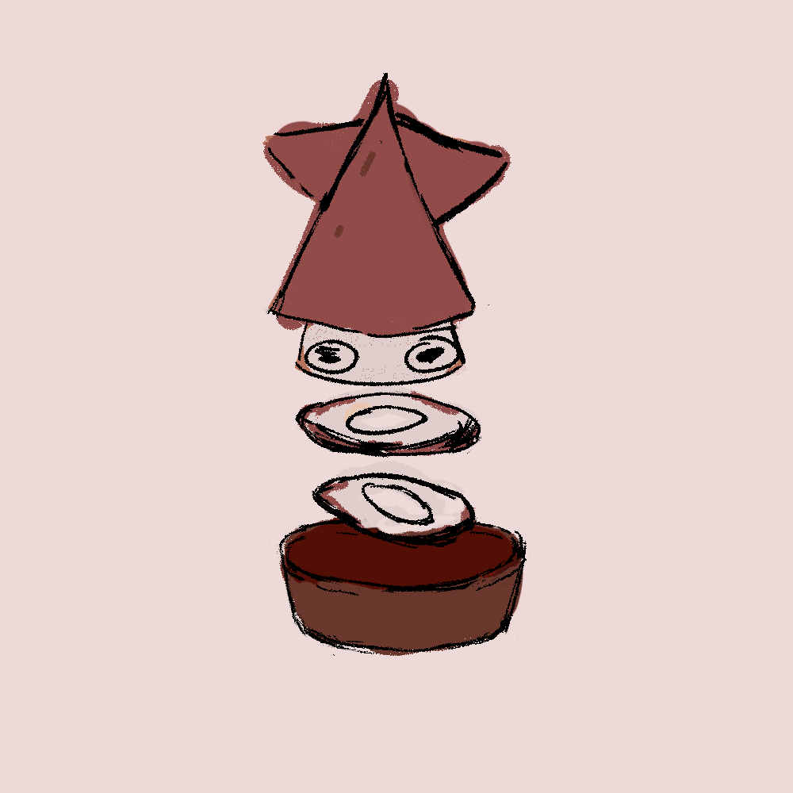

Squidle
Type: Appetizer
Description:
Squidle is a nimble Foodster made from squid rings.
The bottom of its little bowl holds a savory squid ring sauce that enhances its moves.
It uses its crispy edges and quick spins to outmaneuver opponents.
Although its looks clumsy, it layered, floating rings make it both elegant and agile in battle.
Abilities: